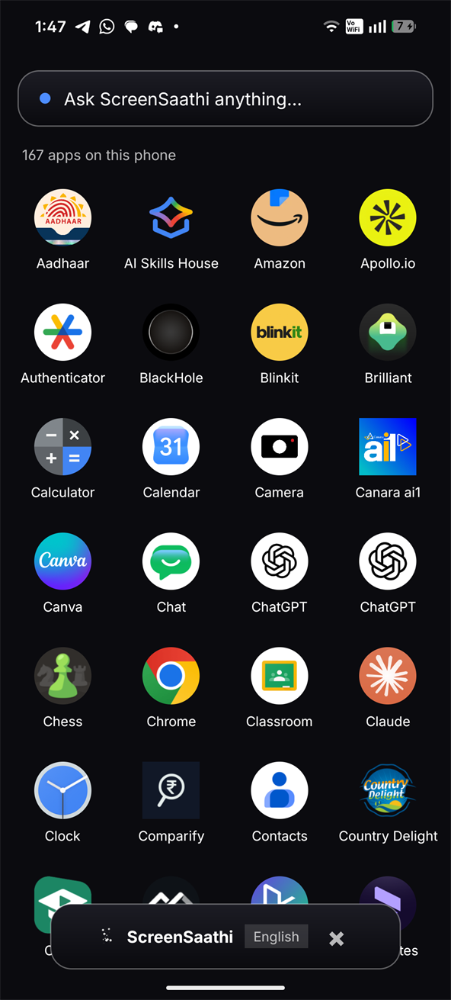
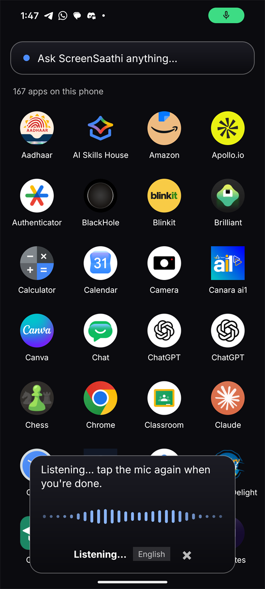
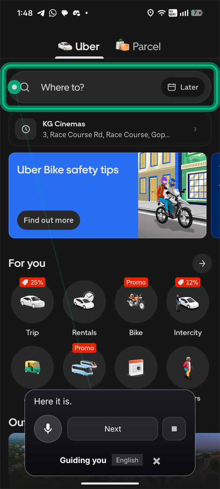
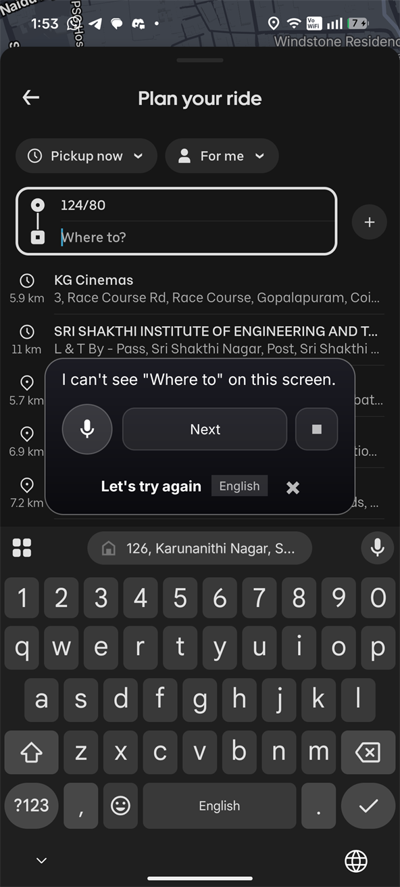

An agentic AI layer
for Android
Understand your screen. Ask naturally. Let ScreenSaathi help. It reads the live interface through Android's accessibility tree, works out which control you actually mean, and rings it — then waits for you to tap.




You
ScreenSaathi
Button · "Where to?" · clickable · confidence 100
Waiting quietly. Tap it, or circle anything on screen.
The problem
Technology got easier.
Interfaces got harder.
A person can know exactly what they want to do and still be stuck, because today's interface expects them to already know where it hid the button. That gap isn't a knowledge problem. It's a design problem — and it lands hardest on the people with the least room to absorb it.
What people are asked to do
- Recognise an unlabelled icon
- Know that "⋮" hides the thing they need
- Read 11px grey text on white
- Guess which of four buttons is the real one
- Do it again after the next app update
What they actually want to say
- "Help me book a taxi."
- "Where do I find my ticket?"
- "Help me pay this bill."
- "How do I share this photo?"
- "टैक्सी बुक करने में मेरी मदद करो"
People shouldn't have to learn the interface before they can use it. The software should learn how to help them.
The loop
Speak. Perceive. Decide. Guide. Continue.
Not a chatbot with a screenshot. A loop that re-reads the screen after every step, so guidance survives the interface changing underneath it.
Speak
Say it in Hindi, Tamil or English — or circle something instead.
Perceive
Read the live accessibility tree: labels, roles, bounds, state.
Decide
Resolve which element is meant. Refuse if it's genuinely ambiguous.
Guide
Ring the real control and say what it is. The person taps it.
Continue
Screen changed → clear the ring, re-read, find the next step.
Screen understanding
It reads structure,
not just pixels.
Android already publishes what's on screen — every label, role, bound and state — to assistive technology. ScreenSaathi starts there. That's why it can say "the Book now button" instead of describing a picture of one.
Told, not inferred
A pixels-only assistant has to infer that a rounded rectangle is a button. ScreenSaathi is told it is one — along with whether it's enabled, whether it takes text, and exactly where it sits.
Four wins, one decision
So the common case needs no model at all: private (the screen stays on the phone), free, instant, and checkable — you can see why it matched.
Pixels are an escalation
When the tree is weak or the region is genuinely just an image,
PerceptionStrategy
says so rather than inventing an answer.
Circle to understand
Most tools answer.
This one can help.
Circle anything on screen and ask about it. The difference isn't the circle — it's what happens after. ScreenSaathi remembers what you selected, so "okay, help me use it" still knows what it is.
Traditional visual search
The conversation ends at the answer. Acting on it is still your problem.
ScreenSaathi
The selection becomes context for a task. Follow-ups keep it.
SelectionResolver: a clickable button labelled “Book now”.Multilingual
Ask in your language.
Get answered in it.
The spoken language is detected, and the reply comes back in the same one — including the assistant's own wording, not just a translated sentence.
Being precise about this: Hindi, Tamil and English are fully authored — the assistant's own words exist in each. The speech models recognise and speak more Indian languages than that, but their interface wording still falls back to English, so those are marked planned rather than claimed. Adding one is a good first contribution →
Safety
The model proposes.
Policy decides.
An assistant that can read your screen needs limits that a model cannot argue its way past. Actions are classified before anything is drawn, by deterministic code — not by asking the model whether it thinks it should proceed.
Pick a row — the policy runs on the element's own label, not on what you asked for.
| Action | Policy | What happens |
|---|---|---|
| Reading something aloud | Safe | Proceeds |
| Ringing a control | Safe | Proceeds — you do the tapping |
| Submitting or sending | Confirm | States what it is before you commit |
| Payments and transfers | Confirm | Named explicitly, never a generic “continue?” |
| Granting app permissions | Blocked | Refused outright |
| Factory reset, device admin | Blocked | Refused outright |
| Recovery phrases, private keys | Blocked | Refused outright |
Blocked, not merely confirmed
A confirmation prompt for something that should never happen just trains people to approve prompts. Talking someone through granting permissions is a social-engineering pattern, so it isn't a dialog — it's a refusal.
You are the irreversible step
ScreenSaathi does not tap, type or swipe. The accessibility service deliberately omits gesture permissions. It points; a human decides. That's the strongest safety property in the design, and it's structural.
Architecture
Provider-agnostic
by construction.
No vendor name appears in any AI interface in the codebase. Swapping or adding
a model provider is one class — not a rewrite — and the app is fully functional
with none configured. Every name below is a real file in
src/ScreenSaathi.
Three levels of understanding
ACCESSIBILITY_ONLY when the tree can answer — the common case, nothing leaves the phone. HYBRID when the match is weak. VISION_ONLY when the region is genuinely just pixels.
Vision is designed, not shipped
The multimodal path is built and tested end-to-end — but no vision provider is currently integrated. Circle a photograph today and ScreenSaathi tells you it would need visual understanding, rather than guessing.
More than a crop
When a provider is added, it receives the pixels plus the resolved element, its confidence, nearby text, the screen, the conversation and the active task. A bare crop throws away everything that makes grounding possible.
Open source
Built in the open.
MIT licensed, with the architecture decisions written down — including the ones that look wrong until you know which measured bug they fixed. Contributions welcome across Android, AI providers, vision, languages, accessibility, evaluation, UX and docs.
Every change reaches the APK the same way — through a public pull request, CI, and a tagged release with a published SHA256.
Try it
Tell your phone
what you need.
A physical Android phone is required — accessibility services, overlay windows and the microphone don't behave meaningfully on an emulator. Running in about two minutes.
Download and open the APK. Allow install from unknown sources.
Display over other apps → microphone → accessibility service.
Tap Start assistant. A small pill appears.
Open any app, tap the pill, and say what you want to do.